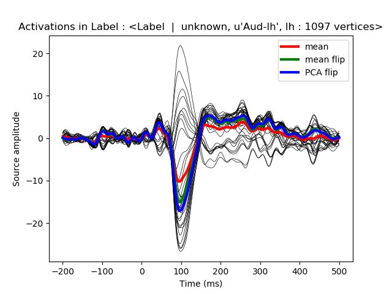

We first apply a dSPM inverse operator to get signed activations in a label (with positive and negative values) and we then compare different strategies to average the times series in a label. We compare a simple average, with an averaging using the dipoles normal (flip mode) and then a PCA, also using a sign flip.
Out:
Reading /home/ubuntu/mne_data/MNE-sample-data/MEG/sample/sample_audvis-ave.fif ...
Read a total of 4 projection items:
PCA-v1 (1 x 102) active
PCA-v2 (1 x 102) active
PCA-v3 (1 x 102) active
Average EEG reference (1 x 60) active
Found the data of interest:
t = -199.80 ... 499.49 ms (Left Auditory)
0 CTF compensation matrices available
nave = 55 - aspect type = 100
Projections have already been applied. Setting proj attribute to True.
Applying baseline correction (mode: mean)
Reading inverse operator decomposition from /home/ubuntu/mne_data/MNE-sample-data/MEG/sample/sample_audvis-meg-oct-6-meg-inv.fif...
Reading inverse operator info...
[done]
Reading inverse operator decomposition...
[done]
305 x 305 full covariance (kind = 1) found.
Read a total of 4 projection items:
PCA-v1 (1 x 102) active
PCA-v2 (1 x 102) active
PCA-v3 (1 x 102) active
Average EEG reference (1 x 60) active
Noise covariance matrix read.
22494 x 22494 diagonal covariance (kind = 2) found.
Source covariance matrix read.
22494 x 22494 diagonal covariance (kind = 6) found.
Orientation priors read.
22494 x 22494 diagonal covariance (kind = 5) found.
Depth priors read.
Did not find the desired covariance matrix (kind = 3)
Reading a source space...
Computing patch statistics...
Patch information added...
Distance information added...
[done]
Reading a source space...
Computing patch statistics...
Patch information added...
Distance information added...
[done]
2 source spaces read
Read a total of 4 projection items:
PCA-v1 (1 x 102) active
PCA-v2 (1 x 102) active
PCA-v3 (1 x 102) active
Average EEG reference (1 x 60) active
Source spaces transformed to the inverse solution coordinate frame
Preparing the inverse operator for use...
Scaled noise and source covariance from nave = 1 to nave = 55
Created the regularized inverter
Created an SSP operator (subspace dimension = 3)
Created the whitener using a full noise covariance matrix (3 small eigenvalues omitted)
Computing noise-normalization factors (dSPM)...
[done]
Picked 305 channels from the data
Computing inverse...
(eigenleads need to be weighted)...
(dSPM)...
[done]
Extracting time courses for 1 labels (mode: mean)
Extracting time courses for 1 labels (mode: mean_flip)
Extracting time courses for 1 labels (mode: pca_flip)
Number of vertices : 33
# Author: Alexandre Gramfort <alexandre.gramfort@telecom-paristech.fr>
#
# License: BSD (3-clause)
import matplotlib.pyplot as plt
import mne
from mne.datasets import sample
from mne.minimum_norm import read_inverse_operator, apply_inverse
print(__doc__)
data_path = sample.data_path()
label = 'Aud-lh'
label_fname = data_path + '/MEG/sample/labels/%s.label' % label
fname_inv = data_path + '/MEG/sample/sample_audvis-meg-oct-6-meg-inv.fif'
fname_evoked = data_path + '/MEG/sample/sample_audvis-ave.fif'
snr = 3.0
lambda2 = 1.0 / snr ** 2
method = "dSPM" # use dSPM method (could also be MNE or sLORETA)
# Load data
evoked = mne.read_evokeds(fname_evoked, condition=0, baseline=(None, 0))
inverse_operator = read_inverse_operator(fname_inv)
src = inverse_operator['src']
# Compute inverse solution
pick_ori = "normal" # Get signed values to see the effect of sign filp
stc = apply_inverse(evoked, inverse_operator, lambda2, method,
pick_ori=pick_ori)
label = mne.read_label(label_fname)
stc_label = stc.in_label(label)
mean = stc.extract_label_time_course(label, src, mode='mean')
mean_flip = stc.extract_label_time_course(label, src, mode='mean_flip')
pca = stc.extract_label_time_course(label, src, mode='pca_flip')
print("Number of vertices : %d" % len(stc_label.data))
# View source activations
plt.figure()
plt.plot(1e3 * stc_label.times, stc_label.data.T, 'k', linewidth=0.5)
h0, = plt.plot(1e3 * stc_label.times, mean.T, 'r', linewidth=3)
h1, = plt.plot(1e3 * stc_label.times, mean_flip.T, 'g', linewidth=3)
h2, = plt.plot(1e3 * stc_label.times, pca.T, 'b', linewidth=3)
plt.legend([h0, h1, h2], ['mean', 'mean flip', 'PCA flip'])
plt.xlabel('Time (ms)')
plt.ylabel('Source amplitude')
plt.title('Activations in Label : %s' % label)
plt.show()
Total running time of the script: ( 0 minutes 1.142 seconds)